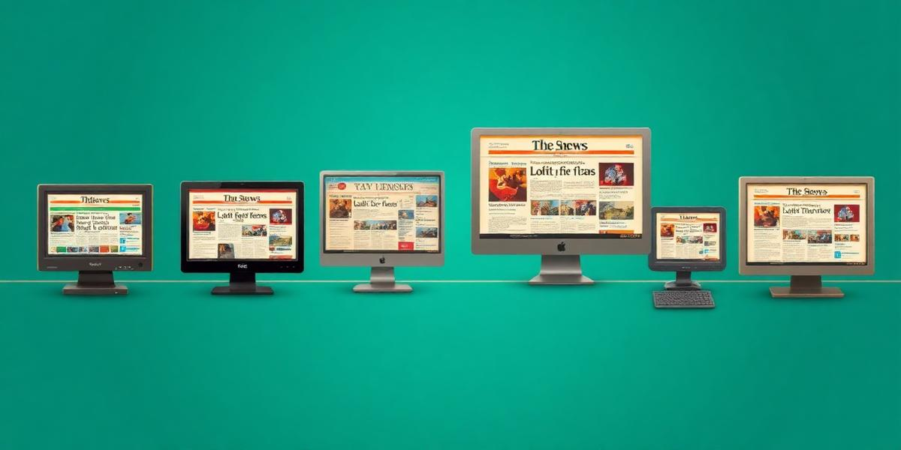

Discover how to access decades of preserved news content from the Internet Archive's vast collection of over 735 billion web pages
The Internet Archive's Wayback Machine captures snapshots of websites over time, creating a comprehensive historical record of digital news content.
Web crawlers capture and store complete snapshots of news websites at regular intervals, preserving headlines, articles, and multimedia content.
Over 735 billion web pages archived since 1996, including major news outlets like CNN, BBC, Reuters, and thousands of smaller publications.
Free access through the Wayback Machine interface and APIs, enabling researchers, journalists, and historians to study media evolution.
Named after the "WABAC machine" from The Rocky and Bullwinkle Show, the Wayback Machine allows you to travel back in time to see how websites appeared on specific dates. This includes capturing breaking news as it happened, preserving the immediate reactions and reporting of historical events.
Visit Wayback MachineBuild archive URLs and explore real examples of preserved news content.
Build Wayback Machine URLs to access archived versions of news websites

Explore actual archived news websites from pivotal moments in history.
Choose the approach that best fits your technical skills and project requirements.
The simplest way to find archived news headlines using the web interface
Use official APIs to programmatically access archived content
Discover how news archival has evolved from the early days of the web to today.